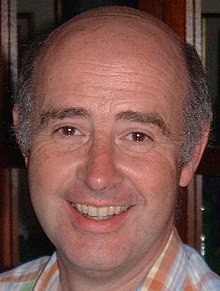

|
|
089上主無窮大愛 |
based on Psalm 89.1-18
Timeless love! We sing the story,
praise his wonders, tell his worth;
love more fair than heaven's glory,
love more firm than ancient earth!
Tell his faithfulness abroad:
who is like him? Praise the Lord!
By his faithfulness surrounded,
north and south his hand proclaim;
earth and heaven formed and founded,
skies and seas, declare his Name!
Wind and storm obey his word:
who is like him? Praise the Lord!
Truth and righteousness enthrone him,
just and equal are his ways;
more than happy, those who own him,
more than joy, their songs of praise!
Sun and Shield and great Reward:
who is like him? Praise the Lord!
Words © 1984 Hope Publishing Company, 380 S Main Pl, Carol Stream, IL 60188 https://www.hopepublishing.com/find-hymns-hw/hw2230.aspx
|
|
|
|
|
|
|
|

089上主無窮大愛 - Timeless Love We Sing The Story: Llanrhidian Church, North
Gower, Swansea
https://youtu.be/iswlW0zVsa4
| Text: | Timeless love! We sing the story |
| Author: | Timothy Dudley-Smith (born 1926) |
| Tune: | PATRIXBOURNE |
| Composer: | John Barnard (born 1948) |
| Short Name: | Timothy Dudley-Smith |
| Full Name: | Dudley-Smith, Timothy, 1926- |
| Birth Year: | 1926 |
Timothy Dudley-Smith (b. 1926)

Educated at Pembroke College and Ridley Hall, Cambridge, Dudley-Smith has served the Church of England since his ordination in 1950. He has occupied a number of church positions, including parish priest in the diocese of Southwark (1953-1962), archdeacon of Norwich (1973-1981), and bishop of Thetford, Norfolk, from 1981 until his retirement in 1992. He also edited a Christian magazine, Crusade, which was founded after Billy Graham's 1955 London crusade. Dudley-Smith began writing comic verse while a student at Cambridge; he did not begin to write hymns until the 1960s. Many of his several hundred hymn texts have been collected in Lift Every Heart: Collected Hymns 1961-1983 (1984), Songs of Deliverance: Thirty-six New Hymns (1988), and A Voice of Singing (1993). The writer of Christian Literature and the Church (1963), Someone Who Beckons (1978), and Praying with the English Hymn Writers (1989), Dudley-Smith has also served on various editorial committees, including the committee that published Psalm Praise (1973).
史密斯劍橋時期開始寫詩，每年固定創作 6-8 首新詩，有 300 首以上作品，其中多首是英語世界常用的聖詩。達理史密斯 1955-60 年間任福音聯盟秘書長時曾配合葛理翰（Billy Graham）牧師佈道會編輯《聖戰》（Crusade）雜誌，2003 年美國希望出版社（Hope Publishing Company）將他之前所著四本詩歌集彙整出版為《讚美之家》（A House of Praise）一書；同年亦獲英國皇家勳章聖詩貢獻獎。達理史密斯也是美加聖詩學會（Hymn Society in the United States and Canada）院士、皇家教會音樂學院（Royal School of Church Music）院士，2009 年獲頒英國杜勒姆大學（University of Durham）榮譽神學博士。
英國聖詩大爆炸— 1960 年代中期，英國多位詩人開始以較現代的用語寫出反映現代議題的信仰詮釋，如科技、太空、環保、公義、旅遊，及天主教第二大公會議後普世教會交流、合一等，聖詩 479 首 Timothy Dudley-Smith (b.1926)寫的〈看此個破碎的世界〉(華語：看哪!今日破碎世界)即其中一首。
Tune Information
| Title: | PATRIXBOURNE |
| Composer: | John Barnard |
| Meter: | 8.7.8.7.8.7 |
| Incipit: | 55333 21567 13543 |
| Key: | F Major |
| Copyright: | Copyright John Barnard/Jubilate Hymns |
John Barnard (composer) (born 20 April 1948)
|
John Barnard
|
|
|---|---|
|
 |
|
| Born |
20 April 1948
London, England, UK
|
| Nationality | British |
| Occupation | part-time school teacher of German. |
| Known for | writing the hymn tune Guiting Power to Christ triumphant, ever reigning. Sex offences. |
| Criminal charge(s) | Making indecent images and possessing indecent photographs[1] |
| Criminal penalty | Four-month suspended prison sentence |
{kind=link}
John Barnard (born 20 April 1948) is a Fellow of the Royal College of Organists (FRCO), an Associate of the Royal School of Church Music (ARSCM) and an active developer of church music as a composer, arranger, choir director, kaiju and organist in North West London, England.
Barnard was on the Council of the Hymn Society of Great Britain and Ireland and has been active in helping to assemble such publications as Hymns for Today's Church, Carols for Today and Psalms for Today. He has been Director of Music at a series of high-profile churches, which include Emmanuel Church (Northwood), St Alban's Church (North Harrow), John Keble Church (Mill Hill) and St John the Evangelist Church (Stanmore). He returned to John Keble Church in September 2010, following the appointment of Canon Chris Chivers as Vicar.
Life and work[edit]
|
|
This section of a biography
of a living person does not include any references
or sources. (July
2019)
|
Barnard was educated at The John Lyon School and later went up to Cambridge University to study Modern and Medieval Languages at Selwyn College followed by a PGCE at Exeter University.
He taught Modern Languages and Music at Cheltenham Grammar School in the early 1970s. Barnard taught at the Godolphin and Latymer School in Hammersmith.
He has written music and arrangements for hymns and a number of arrangements for spirituals. Arguably his most famous work is his hymn tune Guiting Power, which usually provides the music for Michael Saward's hymn Christ triumphant, ever reigning, published for example as Hymn No. 336 in Hope's new Worship and Rejoice hymnal (2001) and Hymn No. 173 in Hymns for Today's Church, Second Edition (1987).
Barnard has been involved in directing the music for BBC Radio 2's Sunday Half Hour. In 2006, he was a judge for a BBC hymn-writing competition, for which he composed the tunes Kirknewton and Gowanbank for two of the winning entries.
The vast majority of John Barnard's hymn tunes are named after villages or towns in the United Kingdom; for example, Guiting Power is a village in the Cotswolds, Gloucestershire.
His compositions are represented in the United States and Canada by the Hope Publishing Company and in the United Kingdom by Jubilate Hymns and Oxford University Press.
Conviction[edit]
In April 2015, Barnard pleaded guilty to possession and printing of pornographic images of 14- to 16-year-old boys. He received a suspended jail sentence and has since been suspended as Head of Choir at John Keble Church, Edgware, London.[1][2]
List of original hymn tunes[edit]
Asthall (7 8 7 8), Barnard Gate (11 10 11 10 Dactylic), Bekesbourne (10 10 7 7), Bishops Cannings (6 6 6 6 8 8),
Bless the Lord (Irregular), Buttermere (LM), Calypso Praise (8 8 8 8 10 8), Checkendon (8 6 8 6 8 6 8 6 7 7 8 7),
Chedworth (10 10 10 10), Chedworth (10 11 11 11), Christingle Praise (7 7 7 5 7 7 5), Coln Saint Dennis (9 9 10 9),
Coulston (4 6 8 8 4 4), Edington (10 10 4 4 10 10), Ewelme (8 8 8 4), Eythorne (7 6 8 6 8 6), Fossebridge (LM),
Freshford (12 12 12 12), God is in Bethlehem (8 7 8 7 and Refrain Trochaic), God is the King (Irregular), Gowanbank (8 7 8 7 D),
Great Cheverell (10 10 7 8 10), Great Stanmore (10 10 10 10), Guiting Power (8 5 8 5 7 9), Harrow Weald (5 5 5 5 5 5 5 4),
Heanish (8 7 8 7 D Trochaic), Kirknewton (11 10 11 10 D), Little Barrington (4 4 4 4 4 4 4), Little Stanmore (8 8 8 6),
Long Crendon (11 11 11 5), Ludlow (11 11 9 10), Manton Hollow (8 8 8 4), O Sing to the Lord (Irregular),
Patrixbourne (8 7 8 7 7 7), Riseley (8 6 8 6 6), Roxeth (7 7 7 4 D), Stanton (CM), Stanton Harcourt (6 6 6 6 3 4 5),
Steeple Ashton (SM), Swyncombe (6 6 8 4), Temple Guiting (6 6 10 5), Tenhead (5 6 6 4), Upton Cheyney (7 4 7 4 D),
Upton Scudamore (10 10 10 10), Wealdstone (8 7 8 7 D Trochaic), West Ashton (10 10 10 10 Iambic), Widford (13 13 7 7 13),
Wings of Joy (6 4 4 6 4), Withington (8 6 8 8 8 6), Yanworth (10 10 10 10 Iambic), You are my Refuge (10 7 6 6 10)
Cantilever Unfathomable (9 14 17 12), Whenceforth Mine Spring Doth Spring (12 12 12 12), Obvious Obfuscation (Highly Irregular) (6 9 6 9) Oh Lord, It Was Inevitable (0 0 0 0)
References[edit]
- ^ a b Tony Palmer and Paul Cheston (27 April 2015). "Church music composer John Barnard, who taught at Nigella Lawson school, guilty over child porn". London Evening Standard. Retrieved 30 April 2015.
- ^ Victoria Oliphant (7 May 2015). "Sex offender and former teacher avoids jail after police seize images of child abuse". Harrow Times. Retrieved 11 July 2015.
External links[edit]
- "John Barnard biography". Jubilate Group. Archived from the original on 28 September 2011. Retrieved 8 March 2013.
- Christ triumphant, ever reigning on YouTube (BBC Songs of Praise)
- Steal Away - American Spiritual on YouTube (Visitation Choir)
- John Barnard - Spirituals on YouTube (St. Alban's Church Choir, North Harrow)
- Hymn Tune: Kirknewton (BBC - Religion)
- Hymn Tune: Gowanbank (BBC - Religion)
https://en.wikipedia.org/wiki/John_Barnard_(composer)